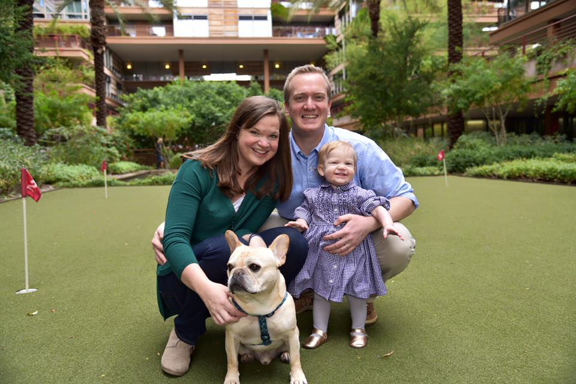

About

Sam loves to spend time with his loving and beatiful wife, Molly, perfect daughter, Samantha, and snuggly french bulldog, Tuck. Some of his hobbies include watching Notre Dame and Nebraska college football, long-distance running, reading, playing video games, and ceramics.
Sam switched careers to computer programing and website design, after recieving his law degree and practicing corporate law. He enjoyes the freedom and creativity that programing and design offers. He works in HTML, CSS, JavaScript, and Ruby on Rails.
Sam earned a Bachelor's degree from the University of Notre Dame with a double major in philosophy and theology. He also recieved his juris doctorate from Georgetown University Law Center.